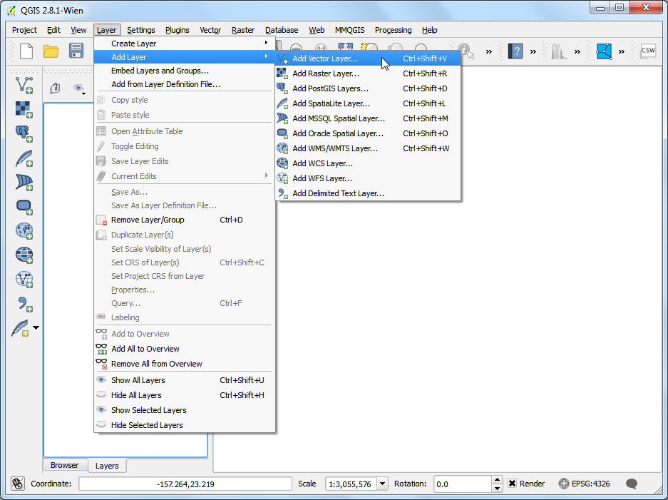
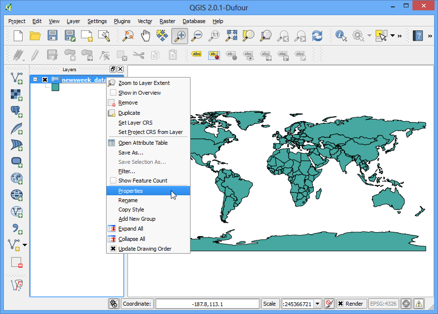
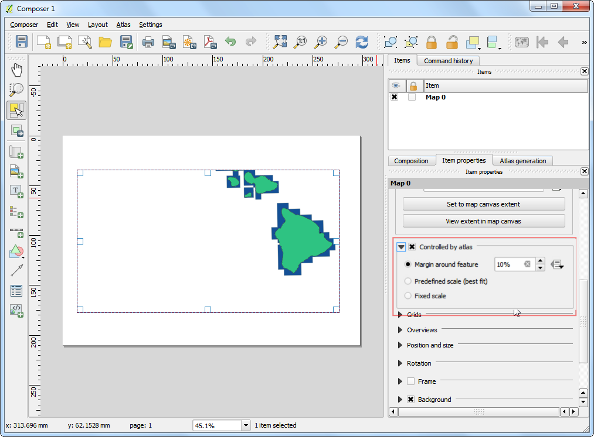
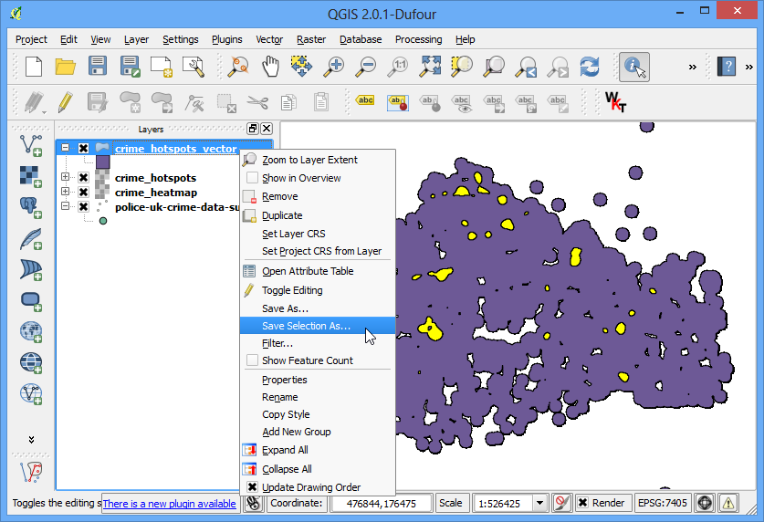
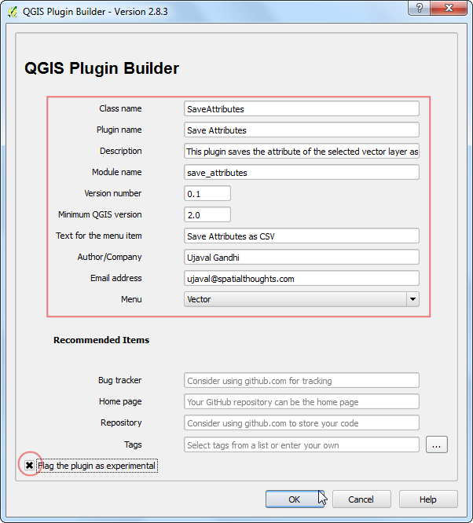
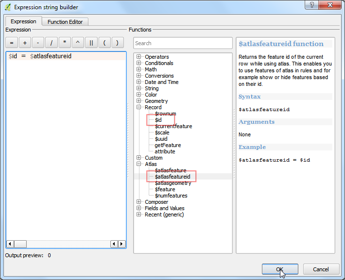
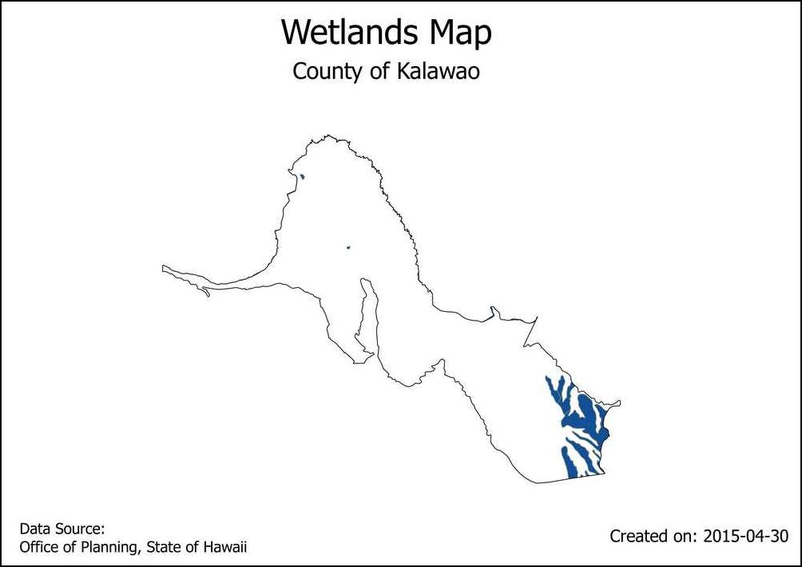
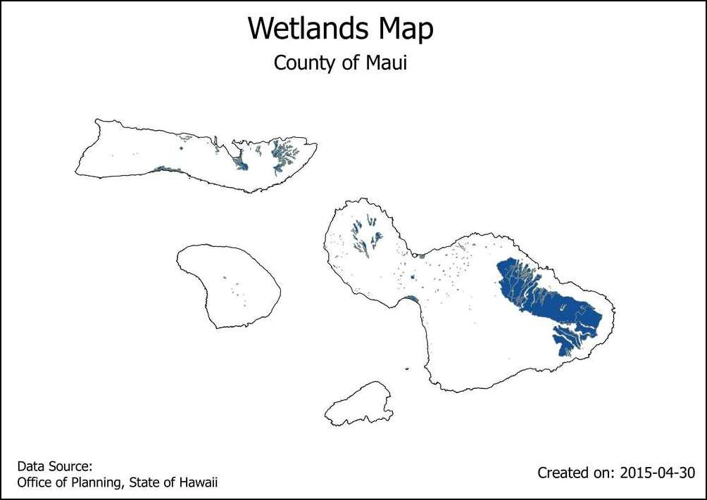

Αυτόματη δημιουργία χάρτη χρησιμοποιώντας την Σύνθεση Εκτύπωσης Ατλαντα
[ Download PDF
A4
Letter ]
Αν ο οργανισμός σας δημοσιεύει εκτυπωμένους ή ψηφιακούς χάρτες, θα χρειάζεται να δημιουργείτε πολλούς χάρτες με βάση το ίδιο πρότυπο - συνήθως ένα για κάθε διοικητική μονάδα ή περιοχή μελέτης. Η δημιουργία αυτών των χαρτών χειροκίνητα μπορεί να πάρει πολύ χρόνο και αν θέλετε να τους ανανεώνετε τακτικά, μπορεί να μετατραπεί σε αγγαρεία. Tο QGIS έχει ένα εργαλείο που λέγεται “Άτλαντας” το οποίο μπορεί να σας βοηθήσει να δημιουργήσετε ένα πρότυπο χάρτη και να δημοσιεύσετε εύκολα μεγάλο αριθμό χαρτών για διαφορετικές περιοχές. Αν δεν είστε οικείοι με τα βασικά χαρακτηριστικά του Συνθέτη Εκτύπωσης, παρακαλώ διαβάστε την άσκηση Δημιουργία ενός χάρτη.
Επισκόπηση του έργου
Αυτή η άσκηση θα σας δείξει πως να δημιουργήσετε χάρτες για υγρότοπους για κάθε δημοτικό διαμέρισμα στην πολιτεία της Χαβάη.
Άλλες δεξιότητες που θα μάθετε
Πως να χρησιμοποιείσετε τον επεξεργαστή μορφορποίησης “Ανεστραμμένα πολύγωνα” για να γεμίσετε περιοχές έξω από τα πολύγωνα.
Πως να χρησιμοποιήσετε κώδικα στον επεξεργαστή μορφοποίησης Rule Based για να δείξετε μόνο το τρέχον χαρακτηριστικό στον Άτλαντα.
Εφαρμόστε εντολές για να δημιουργήσετε δυναμικές ετικέτες στην Σύνθεση Εκτύπωσης.
Διαδικασία
Ανοίξτε το QGIS. Μετάβαση σε: menuselection: Layer -> Layer Προσθήκη -> Προσθήκη Vector Layer..

Περιηγθείτε στο αρχείο``HI_Wetlands.shp.zip`` και πατήστε Open.

Επιλέξτε το στρώμα HI_Wetlands_Poly και πατήστε OK.

Θα δείτε οτι τα πολύγωνα αντιπροσωπεύουν τους υγρότοπους για ολόκληρη την πολιτεία της Χαβάη. Δεδομένου οτι θέλουμε να φτιάξουμε ξεχωριστούς χάρτες για τους υγρότοπους για κάθε δημοτικό διαμέρισμα της πολιτείας, θα χρειαστούμε ένα στρώμα με τα όρια των δήμων. Πηγαίνετε στο :Layer –> Add Layer –> Add Vector Layer και βρείτε το αρχείο county10.shp.zip. Πατήστε Open.

Πηγαίνετε στο .

Αφήστε το πεδίο τίτλο της Σύνθεσης κενό και πατήστε OK.

Πηγαίνετε στο .

Σύρετε ένα παραλληλόγραμμο ενώ κρατάτε το το αριστερό κουμπί του ποντικιού εκεί που θέλετε να εισάγετε τον χάρτη.

Μετακινηθείτε προς τα κάτω στην καρτέλα Item Properties και επιλέξτε το κουτί Controlled by atlas. Αυτό θα υποδείξει στην Σύνθεση οτι η έκταση του χάρτη σε αυτό το αντικείμενο θα καθορίζεται από το εργαλείο “Άτλας”.

Πηγαίνετε στην καρτέλα Atlas generation. Επιλέξτε το κουτί Generate an atlas. Επιλέξτε το county10 ως το Coverage layer. Αυτό θα υποδείξει οτι θέλετε να δημιουργήσετε έναν χάρτη για κάθε πολυγωνο στο στρώμα county10. Μπορείτε επίσης να επιλέξετε το Hidden coverage layer ώστε τα χαρακτηριστικά καθεαυτά να μην εμφανίζονται στον χάρτη.

Θα παρατηρήσετε οτι η εικόνα του χάρτη δεν αλλάζει μετά την διαμόρφωση των ρυθμίσεων του Άτλαντα. Πηγαίνετε στο .

Τώρα θα δείτε τον χάρτη να ανανεώνεται και να δείχνει πως θα εμφανίζονται οι μεμονωμένοι χάρτες. Σημειώστε οτι δείχνει τον τρέχον αριθμό απο το επίπεδο κάλυψης κάτω δεξιά.

Μπορείτε να δείτε πως θα εμφανίζεται ο χάρτης για κάθε πολιτειακό πολύγωνο. Πηγαίνετε στην επιλογή: menuselection:Atlas –> Next Feature

Ο Άτλαντας θα επεξεργαστεί τον χάρτη μέχρι την επόμενη λειτουργία στο επίπεδο κάλυψης.

Ας προσθέσουμε μια ετικέτα στο χάρτη. Πλοηγηθείτε στην επιλογή .

Κάτω απο την καρτέλα Item properties , πατήστε το πλήκτρο Insert an expression...

Η ετικέτα του χάρτη μπορεί να χρησιμοποιήσει τις ιδιότητες απο το επίπεδο κάλυψης. Η συνάρτηση concat χρησιμοποιείται για να ενώσει πολλαπλά αντικείμενα κειμένου σε ένα ενιαίο αντικείμενο κειμένου. Σε αυτή την περίπτωση θα ενώσουμε την τιμή της ιδιότητας NAME10 του επιπέδου county10 με το κείμενο County of. Προσθέστε μια έκφραση όπως παρακάτω και επιλέξτε OK.
concat('County of ', "NAME10")
Ρυθμίστε το φόντο της γραμματοσειράς μέχρι να σας αρέσει.

Προσθέστε μια ακόμη ετικέτα και εισάγετε Wetlands Map κάτω απο :guilabel:`Main properties. Απο την στιγμή που δεν υπάρχει έκφραση εδώ, το κείμενο θα παραμείνει το ίδιο σε όλους τους χάρτες.

Πλοηγηθείτε στην () και επλαηθεύστε οτι οι ετικέτες του χάρτη λειτουργούν όπως επιθυμείτε. Θα παρατηρήσετε οτι ο χάρτης του υγρότοπου έχει πολύγωνα που επεκτείνονται στον ωκεανό και φαίνονται άσχημα. Μπορούμε να αλλάξουμε το στυλ για τις περιοχές έξω απο τα πολιτειακά όρια και να είναι κρυμμένα

Αλλάξτε στο κεντρικό παράθυρο του QGIS. Κάντε δεξί κλικ στο county10 επίπεδο και επιλέξτε Properties

Στην καρτέλα Style, επιλέξτε τον επεξεργαστή Inverted polygons. Αυτός ο επεξεργαστής μορφοποιεί το () το πολυγώνου - όχι το εσωτερικό. Επιλέξτε λευκό σαν το χρώμα γεμίσματος και επιλέξτε :guilabel:`OK.

Αλλάξτε στο παράθυρο Σύνθεσης Εκτύπωσης. Εάν επιθυμείτε το αποτέλεσμα των ανεστραμμένων πολυγώνων, πρέπει να αποεπιλέξετε το κουτί Hidden coverage layer κάτω απο Atlas generation. Τώρα θα δείτε οτι η επεξεργασμένη εικόνα είναι καθαρή και οι περιοχές έξω απο την κάλυψη του πολυγώνου δεν είναι εμφανής

Υπάρχει όμως ένα πρόβλημα. Μπορείτε να δείτε περιοχές του χάρτη που είναι εκτός των ορίων του επιπέδου κάλυψης αλλά ακόμη είναι εμφανείς. Αυτό οφείλεται στο γεγονός οτι ο Άτλαντας δεν καλύπτει αυτόματα τις υπόλοιπες λειτουργίες. Αυτό μπορεί να είναι χρήσιμο σε κάποιες περιπτώσεις, αλλά για τον δικό μας σκοπό, θέλουμε μόνο να δείξουμε τον υγρότοπο της πολιτείας της οποίας τον χάρτη δημιουργούμε. Για να το διορθώσετε αυτό, επιστρέψτε στο κεντρικό παράθυρο του QGIS και κάντε δεξί κλικ στο county10 επίπεδο και επιλέξτε Properties

Στην καρτέλα Style, επιλέξτε τον επεξεργαστή Rule-based ως Sub renderer. Κάντε διπλό κλικ στην περιοχή κάτω απο το Rule

Κάντε κλικ στο κουμπί ... δίπά από το Filter.

Στο Filter”, επεκτέινετε την ομάδα συναρτήσεων :guilabel:`Atlas. Η συνάρτηση $atlasfeatureid θα επιστρέφει το επιλεγμένο χαρακτηριστικό. Θα κατασκευάσουμε μια εντολή η οποία θα επιλέγει μόνο το τρέχον χαρακτηριστικό από τον Άτλαντα. Εισάγετε την εντολή που φαίνεται παρακάτω:

Πίσω στο παράθυρο του Επεξεργαστή Εκτύπωσης, πατήστε το κουμπί Update preview στην καρτέλα Item properties για να δείτε τις αλλαγές. Θα παρατηρήσετε οτι μόνο η περιοχή που καλύπτει το όριο του δήμου είναι εμφανής.

Τώρα θα προσθέσουμε μια ακόμα δυναμική ετικέτα η οποία θα δείχνει την τρέχουσα ημερομηνία. Πηγαίνετε στο και επιλέξτε την περιοχή στον χάρτη. Πατήστε το κουμπί Insert an expression

Επεκτείνετε την ομάδα λειτουργιών Date and Time και βρείτε την συνάρτηση $now. Αυτή η συνάρτηση δείχνει την τρέχουσα ώρα του συστήματος. Η συνάρτηση todate() θα την μετατρέψει σε μια συμβολοσειρά ημερομηνίας. Εισάγετε την παρακάτω εντολή:
concat('Created on: ', todate($now))

Εισάγετε μια ακόμα ετικέτα στην οποία θα αναφέρετε την πηγή των δεδομένων. Μπορείτε επίσης να εισάγετε και αλλά στοιχεία στον χάρτη όπως σημείο βορρά, κλίμακα κ.α. όπως περιγράφεται στο κείμενο Δημιουργία ενός χάρτη.

Μόλις είστε ικανοποιημένοι με τον χάρτη, πηγαίνετε στο .

Επιλέξτε έναν φάκελο στον υπολογιστή και πατήστε Choose.

Το εργαλείο Άτλαντας θα επαναλάβει την διαδικασία για κάθε χαρακτηριστικό στο στρώμα και θα δημιουργήσει έναν ξεχωριστό χάρτη με βάση το πρότυπο που δημιουργήσαμε. Μπορείτε να δείτε τις εικόνες στον φάκελο μόλις η διαδικασία ολοκληρωθεί.

Εδώ είναι οι εικόνες των χαρτών για αναφορά.



